UX Case Study
Ethical Pay
Overcoming the challenge of balancing fashion and ethical responsibility, I designed a system that lets shoppers directly support the garment workers behind the fast fashion products they buy.
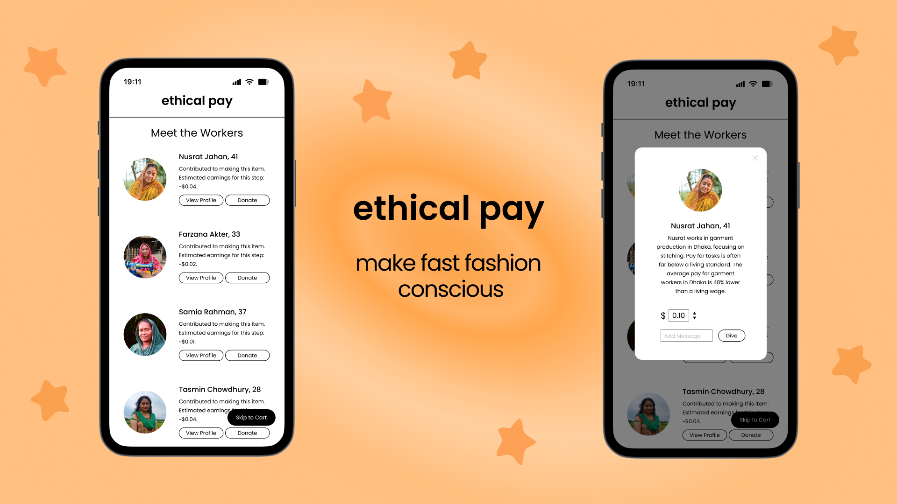
The Problem
Garment workers remain underpaid, and most shoppers never find out.
- Garment workers in the fast fashion industry are not being paid fair wages, and unethical treatment of workers remains largely unknown to the public.
- Even when consumers are aware of the problems surrounding fast fashion, many continue purchasing fast fashion products because of their affordability and appealing designs, while alternatives are financially inaccessible.
Results
- The unfair wage system continues unresolved.
- Consumers who are aware of the ethical problems behind fast fashion are forced into a difficult choice between giving up the fashion they enjoy or contributing to an unethical industry through their purchases.
The Solution
I designed a system that lets consumers directly support the garment workers who made their clothes.
What Ethical Pay Does
- When consumers add products from fast fashion brands to their online shopping carts, they are automatically redirected to ethical pay.
- Consumers are shown the workers involved in producing the garment they intend to purchase, revealing that the people who made the clothing often receive only minimal compensation for their labor.
- Users can view individual worker profiles and learn about their living and working conditions. If they wish to provide support, they can choose an amount to contribute alongside their purchase at checkout.
- The platform raises awareness about labor conditions in the fast fashion industry without interrupting the shopping experience. Consumers can continue enjoying fast fashion while contributing to improvements in garment workers' wages.
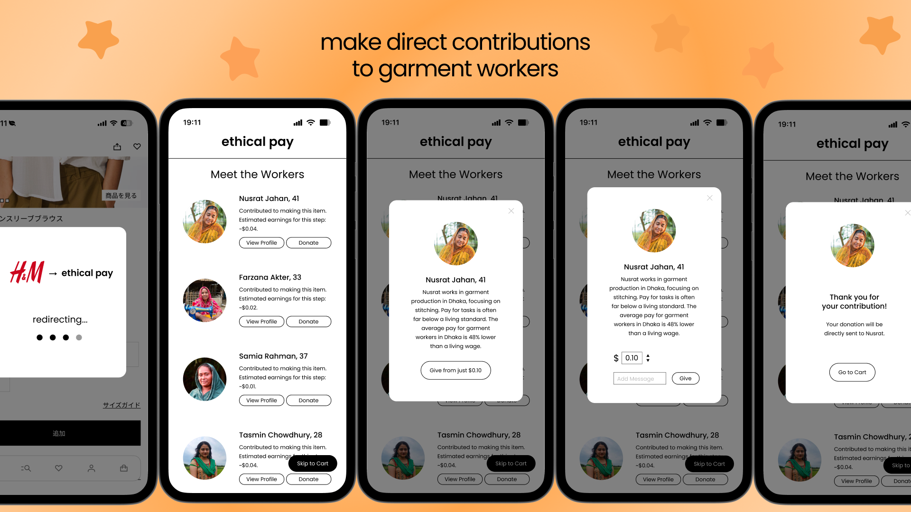
Social Issue
The unethical nature of the fast fashion industry has become increasingly visible in recent years.
- Fewer than 2% of garment workers receive a living wage (EARTHDAY, 2025).
- On average, garment workers earn 45% less than a living wage (Industry Wage Gap Metric, 2022).
- More than half of Japanese consumers report that they do not particularly consider ethical or environmental factors when purchasing clothing. However, awareness tends to be relatively higher among teenagers and people in their twenties (Consumer Affairs Agency, 2021).
The problem lies not only in the unethical practices of the fast fashion industry itself, but also in the lack of widespread awareness surrounding these issues.
User Research
According to a 2021 survey conducted by Japan's Consumer Affairs Agency, attitudes toward ethical and environmental considerations in clothing purchases differed between younger generations and older age groups. Approximately 3% of respondents in their teens and twenties reported considering such factors, compared to roughly 1.5% among people in their thirties to sixties.
Although awareness remains low overall, younger consumers demonstrated relatively higher levels of ethical awareness. Based on this finding, the project focused on teenagers and people in their twenties, as they were considered more likely to engage with solutions to the issue.
The target audience became younger consumers who already show relatively higher ethical awareness regarding fashion.
1. Problem Definition
Personas
Personas revealed two primary behavioral patterns:
- Pattern A: The consumer has heard about problems within the fashion industry but lacks detailed knowledge and therefore does not pay much attention to the issue. They purchase fast fashion products without hesitation.
- Pattern B: The consumer is aware of the ethical problems within the fashion industry and feels conflicted between wanting to purchase products and wanting to avoid contributing to unethical labor practices. Buying the product supports the system, while avoiding it means giving up fashion they enjoy.
In both cases, fast fashion products remain highly attractive to consumers, making it unrealistic to expect people to completely stop purchasing them. Completely separating consumers from fast fashion brands overnight is not a realistic solution.
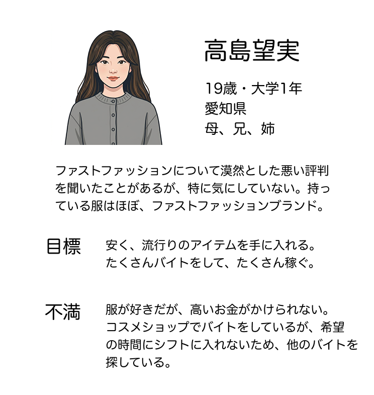
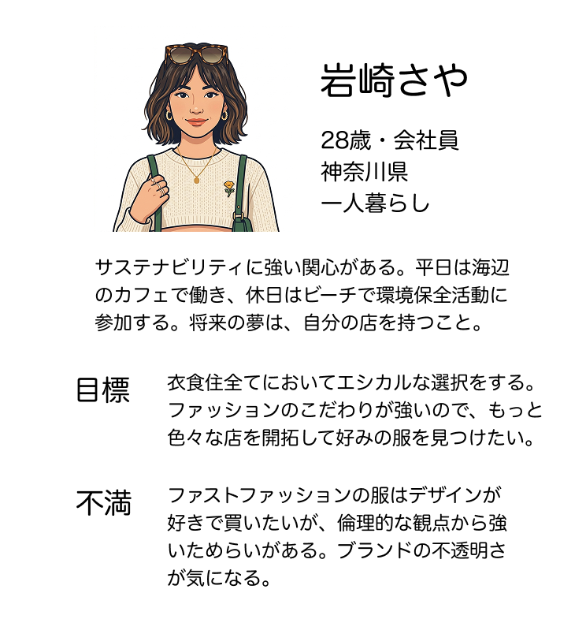
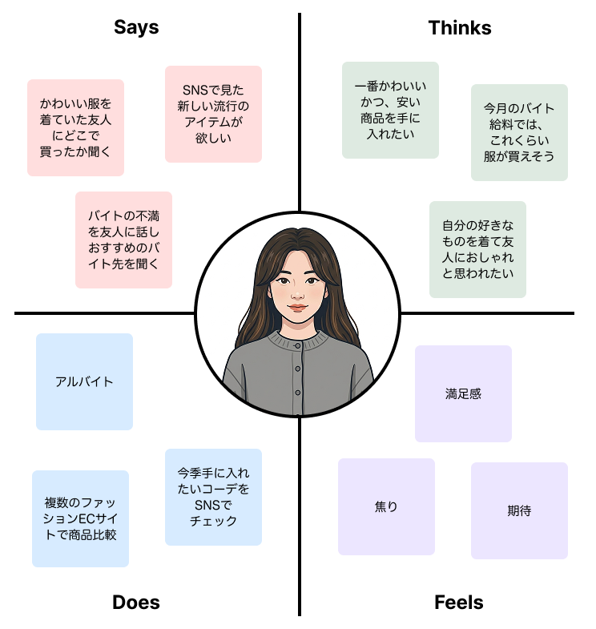
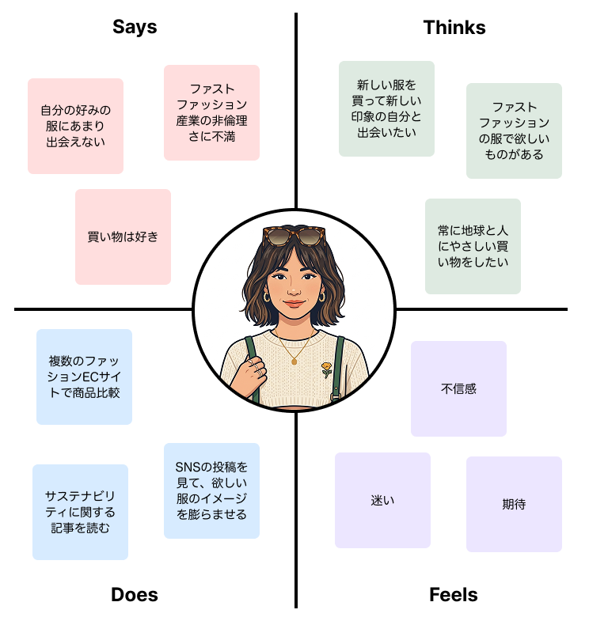
2. How Might We Questions
To explore solutions addressing both persona types, the following "How Might We" questions were developed:
- How might we increase public awareness of problems within the fashion industry?
- How might we allow everyone to enjoy fashion in their own way?
- How might we encourage participation in solving ethical problems within the fashion industry?
- How might we enable consumers to enjoy fashion while also contributing to positive change in the industry?
- How might we help garment workers receive fair wages?
Through this process, two key differences between the personas became clear:
- They differed in their level of awareness regarding the ethical issues surrounding fast fashion.
- Only one group experienced hesitation when purchasing products from fast fashion brands.
As a result, the project concluded that two goals were essential:
- Bridging the knowledge gap by increasing awareness among consumers who previously lacked information about the industry.
- Creating a way for consumers to contribute to solving ethical issues without completely giving up fast fashion.
Based on the goals, the project decided to focus on the HMW question:
"How might we raise awareness about the problems within the fast fashion industry while also creating alternatives beyond simply choosing whether or not to purchase fast fashion products?"
3. Ideation
After conducting a Crazy 8s, ideas were evaluated for feasibility and long-term impact. As a result, the most promising direction became clear:
Creating a system that allows consumers purchasing fast fashion products to directly support garment workers without involving the brands themselves.
Key Features
- Showing consumers the faces and profiles of the workers who made their clothing to encourage empathy and support.
- Presenting the donation option while users add items to their carts rather than after checkout, when users are more likely to rush through the purchase process.
- Using a third-party tool that automatically redirects users to worker profiles and donation options when products are added to the cart.
- An independent platform that allows consumers to see and directly support the people who make the clothes they want to buy.
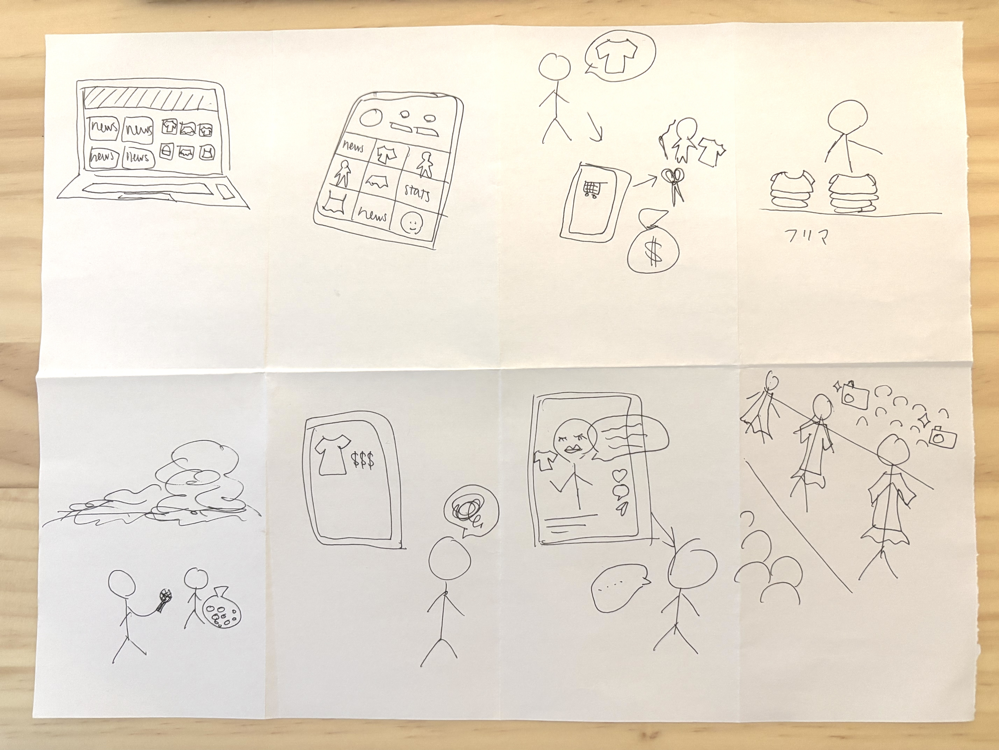
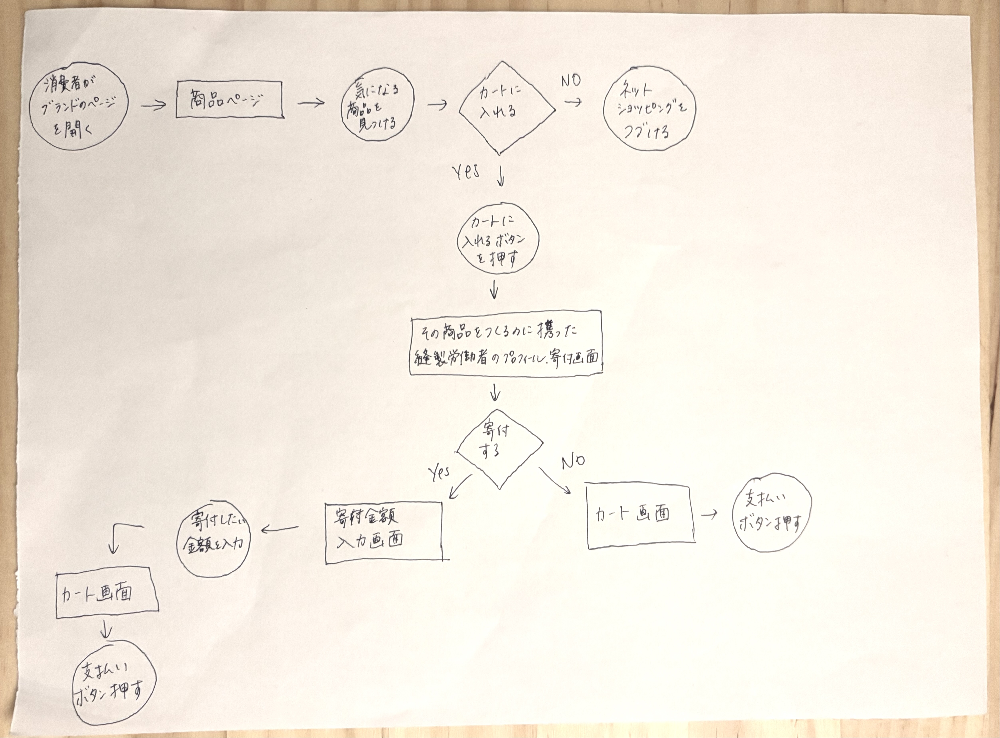
4. Wireframe & Prototype
Key Points
- The interface was intentionally designed to avoid distracting or frustrating users during online shopping. For example, redirect popups were included so users could clearly understand what stage of the process they were in, rather than being abruptly redirected away from the brand's website.
- The worker profile screen included a "Skip to Cart" button, and each worker profile included a close button, emphasizing that donations are entirely optional.
- Even users who chose not to donate would still briefly encounter information about garment workers' realities. This design decision intentionally increased visibility of the issue among a broader audience.
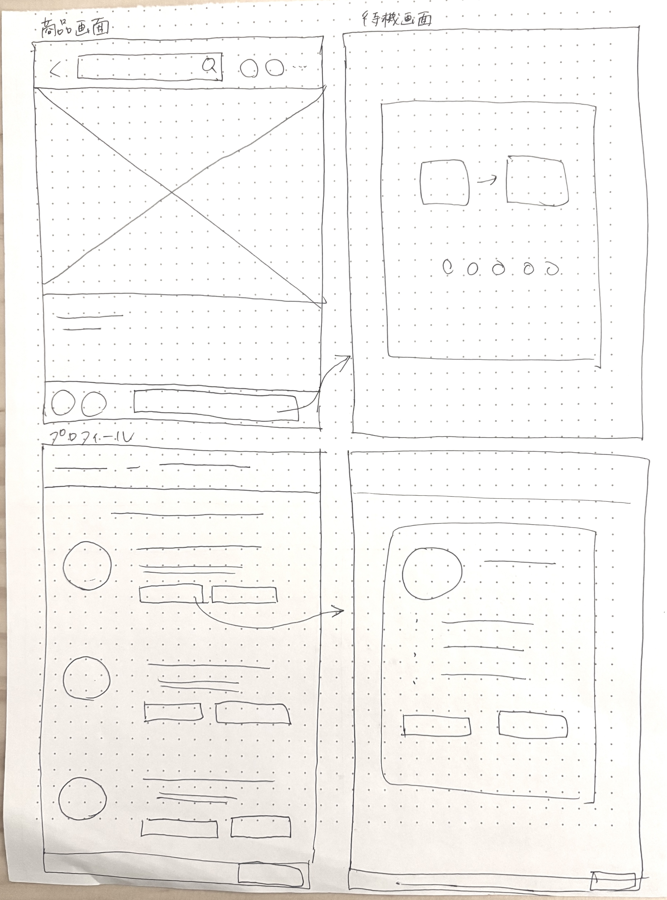
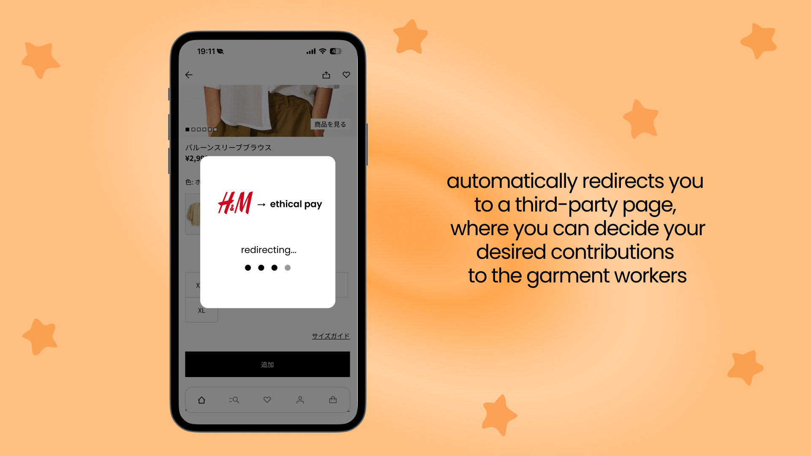
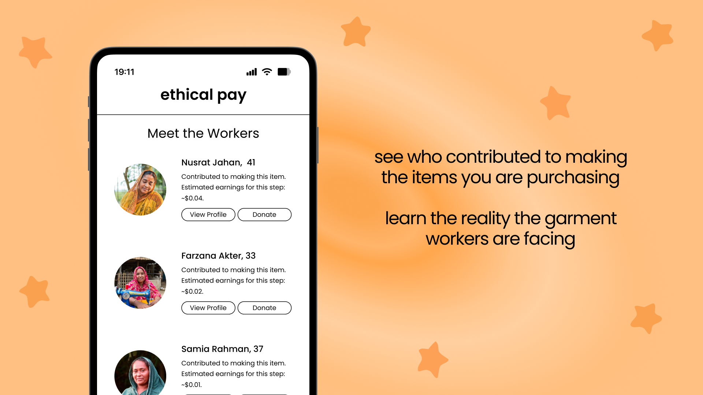
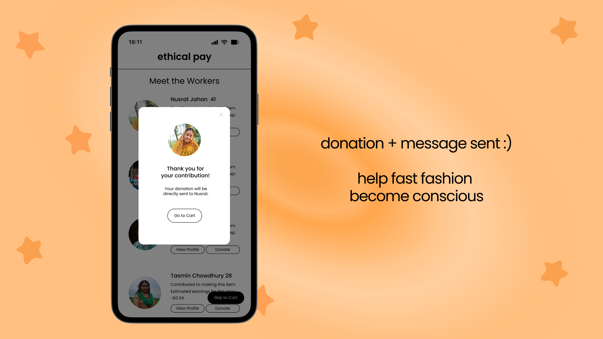
5. Reflection
Successes
- Ethical Pay eliminated the need for consumers to choose between abandoning the fashion they enjoy and contributing to unethical labor practices.
- The minimal design reduced the feeling that users were being pressured into donating.
- With the faces and stories of garment workers, the platform encouraged users to see the issue as personal.
Challenges and Limitations
- Since Ethical Pay functions as a third-party service, implementation would require cooperation from fast fashion brands, which would likely be difficult to obtain.
- If consumer donations became sufficient to support workers financially, fast fashion companies might feel less pressure to improve wages internally. The unethical structure of the industry could even perpetuate.
In future projects, broader structural and systemic implications should be analyzed earlier in the design process to ensure more sustainable and realistic solutions.